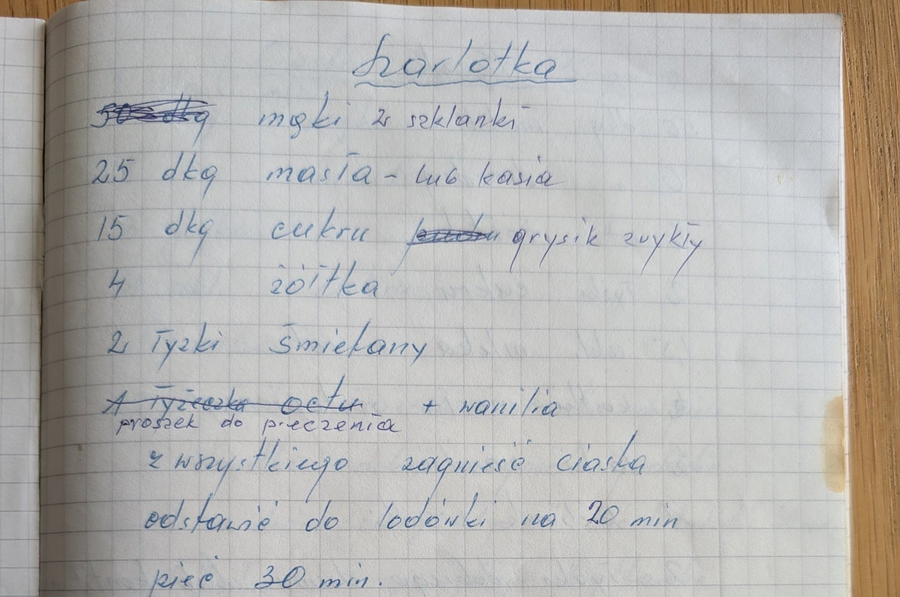
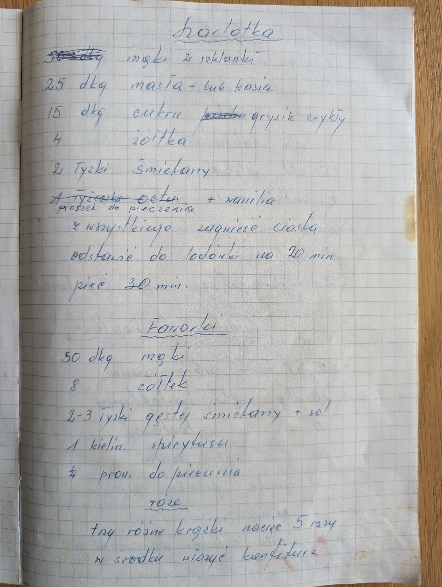

Szarlotka


Składniki
- 2 szklanki mąki
- 25 dkg masła lub margaryny Kasia
- 15 dkg cukru grysik zwykły
- 4 żółtka
- 2 łyżki śmietany
- proszek do pieczenia
- wanilia
Przygotowanie
- Z wszystkiego zagnieść ciasto.
- Odstawić do lodówki na 20 min.
- Piec 30 min.
Oryginalny zapis
Szarlotka [skreślone] mąki 2 szklanki 25 dkg masła – lub kasia 15 dkg cukru [skreślone] grysik zwykły 4 żółtka 2 łyżki śmietany [skreślone: 1 łyżeczka octu] proszek do pieczenia + wanilia z wszystkiego zagnieść ciasto odstawić do lodówki na 20 min piec 30 min.